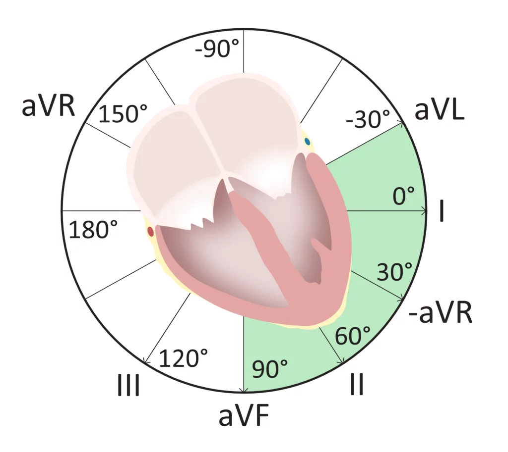

❤️ Cardiology · ECG
ECG Stepwise Guide
A consistent checklist: rhythm → rate → axis → intervals → hypertrophy → ischemia → QT.
1 Rhythm & sinus check
Start here every time. Rhythm errors derail everything downstream.
- P wave before every QRS?
- P upright in leads I and II?
- Regular RR intervals?

Normal P–QRS–T relationship
2 Heart rate
Decide fast if the rate explains the patient.
- Regular rhythm → 300 rule
- Irregular rhythm → 10-second count × 6

300 rule for regular rhythms
3 P waves & atrial enlargement
Atria tell you about chronic pressure and volume load.
- P pulmonale → right atrial enlargement
- P mitrale → left atrial enlargement

P mitrale vs P pulmonale
4 PR interval
PR abnormalities localize AV nodal or accessory pathway disease.
- Normal: 0.12–0.20 s
- Short PR + delta wave → WPW

Short PR with delta wave (WPW)
5 Axis
Axis narrows differential diagnoses quickly.

Frontal plane axis determination